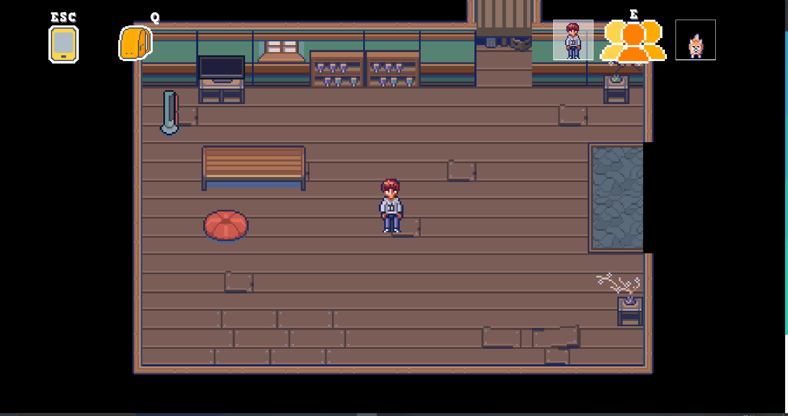
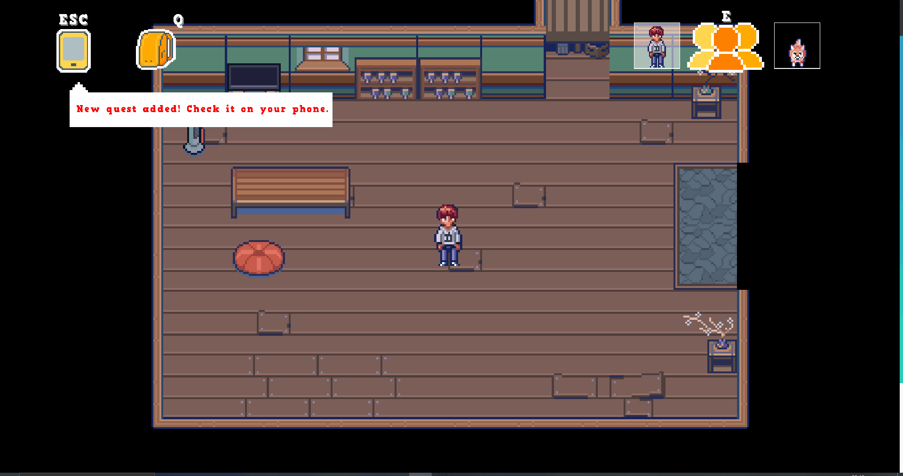

Wasabi Warriors
Role: UI Programmer
In this project I entailed the role of UI designer and Programmer, together with another UI programmer I contributed to the HUD, game inventory, dialog display and mobile phone mechanic.Github
About my CONTRIBUTIONS
Inventory Backpack
Mobile Phone
A backpack inventory that contains items and stats about the selected character.
A mobile phone where you can find a pause menu, quests panel, information about characters, map and settings panel.
Serialization: Save & Load
Serializing items and game entities into XML based format files.
About the GAME
Wasabi Warriors is a Role-Playing Game with a theme-based on an urban Japanese environment and a story about power and corruption. It is mainly played in top-down perspective combined with combat scenes and has different locations and areas to explore. The project aims to be a 30 minutes gameplay experience with a catching narrative to make the player experience a different journey.
Features:
- Japanese theme
- Randomly generated battles
- Party members management
- Turn-based Combat
- Quests & Progression